Module 10 · Hiện thực thực nghiệm các máy thu
Từ Kennedy đến hybrid receiver QPSK, loại trừ bốn trạng thái và triệt tiêu tuần tự
- Tính P_e của homodyne, Kennedy, optimised displacement và Helstrom
- Giải thích hybrid receiver QPSK và so với heterodyne
- Đọc đúng số liệu thí nghiệm: hiệu suất, độ tương phản, so sánh cùng xác suất kết luận
📚 Tài liệu nguồn của module (đã xác minh bằng nội dung từng file)
| File trong kho | Bài báo (đã xác minh bằng nội dung) | Trang | Trạng thái | Đã dùng vào module |
|---|---|---|---|---|
| Becerra_2013_Generalized_Quantum_Measurements.pdf | Implementation of generalized quantum measurements for unambiguous discrimination of multiple non-orthogonal coherent states F. E. Becerra, J. Fan, A. Migdall · 2013 · Nat. Commun. 4, 2028 | 6 | Đã đọc, khớp tên bài | Eq. (1)-(5), Fig. 1-3, thông số thí nghiệm |
| Realizable_Receivers_Coherent_State_M-ary_PSK.pdf | Realizable receivers for discriminating arbitrary coherent-state waveforms and multi-copy quantum states near the quantum limit R. Nair, S. Guha, S.-H. Tan · 2013 · arXiv:1212.2048v2 | 12 | Đã đọc, khớp tên bài | Error exponent, SWN, ST, Fig. 1-4 |
| Wittmann_2012_QPSK_Hybrid_Receiver.pdf | QPSK coherent state discrimination via a hybrid receiver C. R. Müller, M. A. Usuga, C. Wittmann, M. Takeoka, Ch. Marquardt, U. L. Andersen, G. Leuchs · 2012 · New J. Phys. 14, 083009 (arXiv:1204.0888) | 13 | Đã đọc, khớp tên bài | Eq. (1)-(14), Fig. 1-8; tên file ghi Wittmann nhưng tác giả đầu là Müller |
| Becerra_2015_Experimental_Demonstration_Receiver.pdf | Hamiltonian formalism of Minimal Massive Gravity D. Mahdavian Yekta · 2015 · arXiv:1503.08343 [hep-th] | 16 | Sai file: nội dung không khớp tên | Đặt nhầm tên: nội dung là lý thuyết hấp dẫn, không trích |
| Tsujino_2011_Quantum_Receiver_Beyond_SQL.pdf | An electrostatic elliptical mirror for neutral polar molecules A. I. González Flórez, S. A. Meek, H. Haak, H. Conrad, G. Santambrogio, G. Meijer · 2011 · arXiv:1103.5643 [physics.atom-ph] | 5 | Sai file: nội dung không khớp tên | Đặt nhầm tên: nội dung là gương tĩnh điện cho phân tử, không trích |
Bài giảng (slide)
Dùng phím ← → hoặc nút bấm; nút ⛶ để trình chiếu toàn màn hình.
Standard quantum limit và Helstrom bound
- \(\bar n=|\alpha|^2\)số photon trung bình của mỗi trạng thái
- \(|\pm\alpha\rangle\)hai coherent state BPSK
- \(\mathrm{erfc}\)hàm lỗi bù
| \(\bar n\) | Homodyne | Helstrom | Tỉ số |
|---|---|---|---|
| 0,10 | 0,2635 | 0,2129 | 1,24 |
| 0,50 | 0,0786 | 0,0351 | 2,24 |
| 1,00 | 0,0228 | 0,0046 | 4,95 |
| 2,00 | 0,0023 | 0,0001 | 27,89 |
Homodyne là phép đo Gauss tối ưu nên làm mốc cho "standard quantum limit"; khoảng cách tới \(P_e^{\rm Hel}\) là phần máy thu thực dụng cố gắng thu hẹp.
Kennedy: displacement về chân không rồi photon counting
- \(\hat D(\alpha)\)toán tử displacement (mixer + oscillator nội)
- \(e^{-4\bar n}\)xác suất |−α> dịch thành |−2α> mà vẫn không bấm: |<0|2α>|²
Dịch \(|\alpha\rangle\) về chân không. Nếu thật sự là \(|\alpha\rangle\) thì không bao giờ bấm; nếu là \(|{-}\alpha\rangle\) thì trạng thái thành \(|{-}2\alpha\rangle\) và bấm với xác suất \(1-e^{-4|\alpha|^2}\). Lỗi chỉ xảy ra khi \(|{-}\alpha\rangle\) mà không bấm.
Số liệu: \(\bar n=1\Rightarrow P_e^{\rm Ken}=0{,}00916\) so với homodyne \(0{,}02275\).
Ba cách đo trên mặt phẳng pha
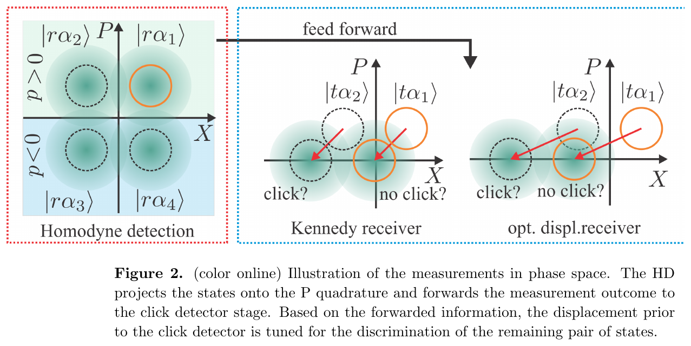
Nguồn: Müller et al., New J. Phys. 14, 083009 (2012), Fig. 2 (p. 5)
Click detector \(\{\hat\Pi_{\rm click},\hat\Pi_{\rm no\,click}\}\) chia mặt phẳng thành hai nửa; displacement chỉ quyết định trạng thái nào bị đưa về \(|0\rangle\). Công thức tổng quát: \(P_e=\sum_{m\neq l}P(H_m|H_l)P(H_l)\).
Ngưỡng cắt giữa Kennedy và homodyne
- \(\bar n^*\)n̄ tại đó hai đường cắt nhau (nghiệm số)
| \(\bar n\) | Homodyne | Kennedy | Tốt hơn |
|---|---|---|---|
| 0,10 | 0,2635 | 0,3352 | Homodyne |
| 0,25 | 0,1587 | 0,1839 | Homodyne |
| 0,50 | 0,0786 | 0,0677 | Kennedy |
| 1,00 | 0,0228 | 0,0092 | Kennedy |
| 2,00 | 0,0023 | 0,0002 | Kennedy |
Müller và cộng sự nêu ngưỡng \(\bar n>0{,}4\) cho nhị phân (Müller 2012, tr. 6); nghiệm số chính xác là \(0{,}3841\).
Error exponent: heterodyne chậm hơn Helstrom bốn lần
- \(\xi=-\lim_{N\to\infty}\tfrac1N\ln P_E\)error exponent của một máy thu
- \(N\)năng lượng trung bình (số photon) của tập tín hiệu
Với QPSK các trạng thái láng giềng cách nhau \(\Vert \alpha_m-\alpha_{m^{\prime}}\Vert ^2=2N\), nên \(\kappa=2\). Kiểm số: độ dốc \(-\mathrm d\ln P_e/\mathrm dN\) của Helstrom giữa \(N=14\) và \(16\) là \(1{,}99\), của heterodyne là \(0{,}53\), gần \(\kappa/4=0{,}5\).
(Nair, Guha, Tan, arXiv:1212.2048, Eq. (12), (15), tr. 3 và 5)
Chòm sao QPSK làm đối tượng của các thí nghiệm
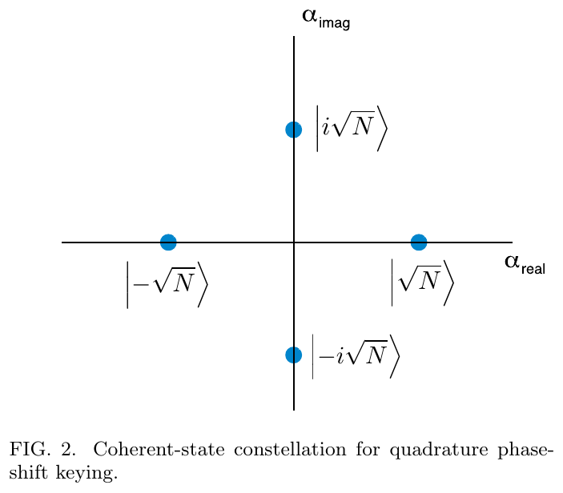
Nguồn: Nair, Guha, Tan, arXiv:1212.2048 (2013), Fig. 2 (p. 5)
\(|\alpha_n\rangle\) với \(\alpha_n=|\alpha|e^{i(n-\frac12)\pi/2}\), \(p_n=\tfrac14\). Ở \(|\alpha|^2\gg1\): \(P_e^{\rm Hel}\approx\tfrac12e^{-2|\alpha|^2}\) (Müller 2012, tr. 4).
Tỉ số kiểm số: \(P_e^{\rm Hel}/(\tfrac12e^{-2\bar n})=\)1,0004 tại \(\bar n=4\).
Sơ đồ hybrid receiver homodyne và photon counting
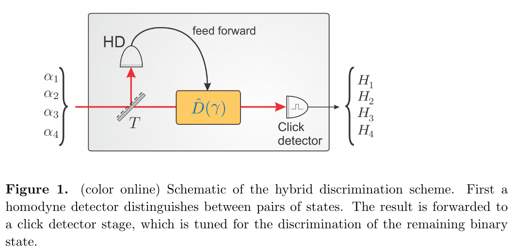
Nguồn: Müller et al., New J. Phys. 14, 083009 (2012), Fig. 1 (p. 3)
Tách chùm bằng bộ chia \(T=t^2\), \(R=r^2=1-t^2\). Homodyne (phần phản xạ) loại một nửa mặt phẳng; kết quả điều khiển \(\hat D(\gamma)\) trước click detector (phần truyền).
\(P_e^{\rm HD\text{-}K}=1-\sum_m p_m P_{\rm succ}^{{\rm HD},m}P_{\rm succ}^{{\rm K},m}\),\ \(p_m=\tfrac14\).
Tầng homodyne chọn nửa mặt phẳng
- \(p\)cầu phương P đo được
- \(r\)hệ số phản xạ của bộ chia chùm
- \(1/\sqrt2\)biên độ hiệu dụng giảm vì chiếu lên một trục
| \(|\alpha|^2\) | \(t^2\) | \(P_{\rm err}^{\rm HD}\) |
|---|---|---|
| 0,97 | 0,50 | 0,1623 |
| 0,97 | 0,30 | 0,1219 |
| 2,00 | 0,50 | 0,0786 |
| 2,00 | 0,30 | 0,0471 |
(Müller 2012, Eq. (4)-(5), tr. 5)
Sai số của hybrid receiver HD-Kennedy
- \(P_{\rm err}^{1}=P_{\rm err}^{\rm HD}\)khi trạng thái đúng bị dịch về chân không
- \(e^{-2|t\alpha|^2}\)phần chồng lấn của hai trạng thái còn lại
| \(|\alpha|^2\) | \(t^2\) | HD-K | tối ưu t² | Pe |
|---|---|---|---|---|
| 0,50 | 0,622 | 0,4655 | 0,622 | 0,4655 |
| 1,00 | 0,593 | 0,3082 | 0,593 | 0,3082 |
| 2,00 | 0,534 | 0,1401 | 0,534 | 0,1401 |
(Müller 2012, Eq. (7)-(9), tr. 6)
Optimised displacement cho QPSK
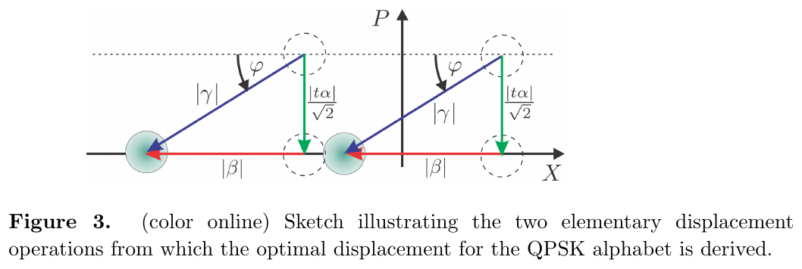
Nguồn: Müller et al., New J. Phys. 14, 083009 (2012), Fig. 3 (p. 6)
- \(\beta\)displacement dọc trục X
- \(\gamma\)displacement toàn phần
Thông số optimised displacement theo công suất
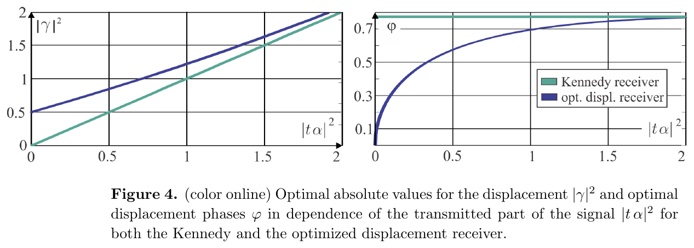
Nguồn: Müller et al., New J. Phys. 14, 083009 (2012), Fig. 4 (p. 7)
\(|\gamma|=\sqrt{|t\alpha|^2/2+|\beta|^2}\), \(\varphi=\arctan\dfrac{|t\alpha|}{\sqrt2|\beta|}\). Giới hạn tín hiệu yếu: \(|\gamma|^2\to0{,}5\) , \(\varphi\to0\). Tín hiệu mạnh: \(\varphi\to\pi/4\).
| \(|t\alpha|^2\) | \(\beta\) | \(|\gamma|^2\) | \(\varphi\) (rad) |
|---|---|---|---|
| 0,01 | 0,7083 | 0,5067 | 0,100 |
| 0,50 | 0,7717 | 0,8455 | 0,575 |
| 1,00 | 0,8483 | 1,2196 | 0,695 |
| 2,00 | 1,0327 | 2,0664 | 0,769 |
Tối ưu hoá tỉ lệ chia chùm
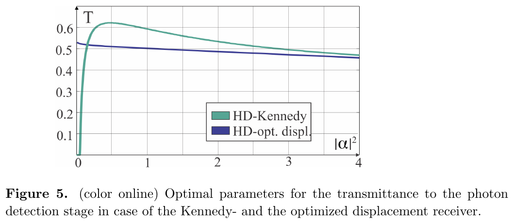
Nguồn: Müller et al., New J. Phys. 14, 083009 (2012), Fig. 5 (p. 8)
| \(|\alpha|^2\) | HD-K \(t^2\) | HD-OD \(t^2\) |
|---|---|---|
| 0,25 | 0,592 | 0,517 |
| 0,50 | 0,622 | 0,511 |
| 1,00 | 0,593 | 0,503 |
| 2,00 | 0,534 | 0,488 |
| 3,00 | 0,495 | 0,473 |
Chân trời \(|\alpha|^2\gg1\): \(t^2\to0\); homodyne là nguồn lỗi chính nên cần phần lớn ánh sáng (Müller 2012, tr. 8). Bảng trên tính lại bằng tối ưu số.
Máy thu loại trừ cho bốn coherent state
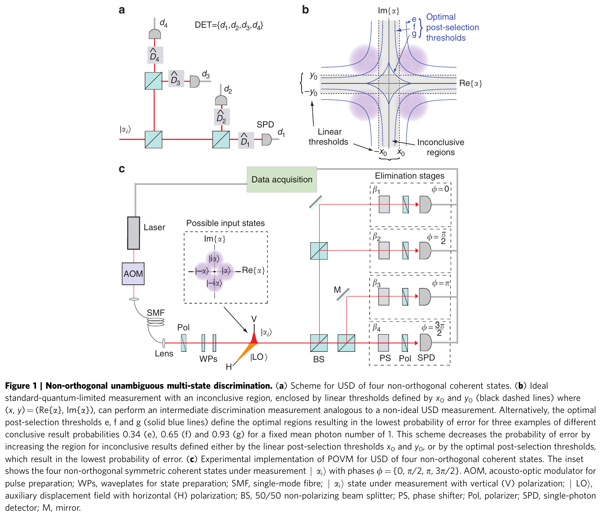
Nguồn: Becerra, Fan, Migdall, Nat. Commun. 4, 2028 (2013), Fig. 1 (p. 3)
\(\hat\Pi_i^{\rm USD}=:\hat R_i:-\sum_j\hat S_{i,j}+\sum_{j,k}\hat T_{i,j,k}-:\hat R_1\hat R_2\hat R_3\hat R_4:\), \(\hat\Pi_?=1-\sum_i\hat\Pi_i\).
Một lần bấm ở cổng \(i\) loại trừ giả thuyết \(i\); chỉ khi đúng một cổng không bấm thì kết luận chắc chắn (Becerra 2013, Eq. (1), tr. 2).
Máy thu triệt tiêu dạng sóng tuần tự (SWN)
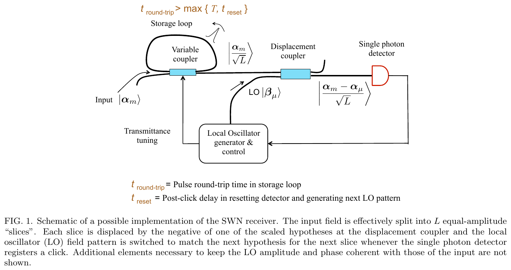
Nguồn: Nair, Guha, Tan, arXiv:1212.2048 (2013), Fig. 1 (p. 4)
Chia tín hiệu thành \(L\) lát (\(L\ge M-2\)); với mỗi lát dịch bằng \(-\alpha_\mu/\sqrt L\) rồi đếm; bấm thì \(\mu\leftarrow\mu+1\). Quyết định \(\hat m=\mu\).
Ví dụ từng bước: nhị phân tại n̄ = 0,5
- Homodyne: \(P_e=\tfrac12\mathrm{erfc}(\sqrt{2\cdot0.5})=\tfrac12\mathrm{erfc}(1)=0{,}07865\)
- Kennedy: \(\tfrac12e^{-2}=0{,}06767\)
- Optimised displacement: giải \(\beta\tanh(2a\beta)=a\), \(a=\sqrt{0.5}\Rightarrow\beta=0{,}8483\); \(P_e=\tfrac12-e^{-a^2-\beta^2}\sinh(2a\beta)=0{,}05436\)
- Helstrom: \(\tfrac12\bigl(1-\sqrt{1-e^{-2}}\bigr)=0{,}03506\)
| Máy thu | Pe | Tỉ số với Helstrom |
|---|---|---|
| Homodyne | 0,07865 | 2,243 |
| Kennedy | 0,06767 | 1,930 |
| OD | 0,05436 | 1,550 |
| Helstrom | 0,03506 | 1,000 |
QPSK tại |α|² = 0,97: số đo và số tính
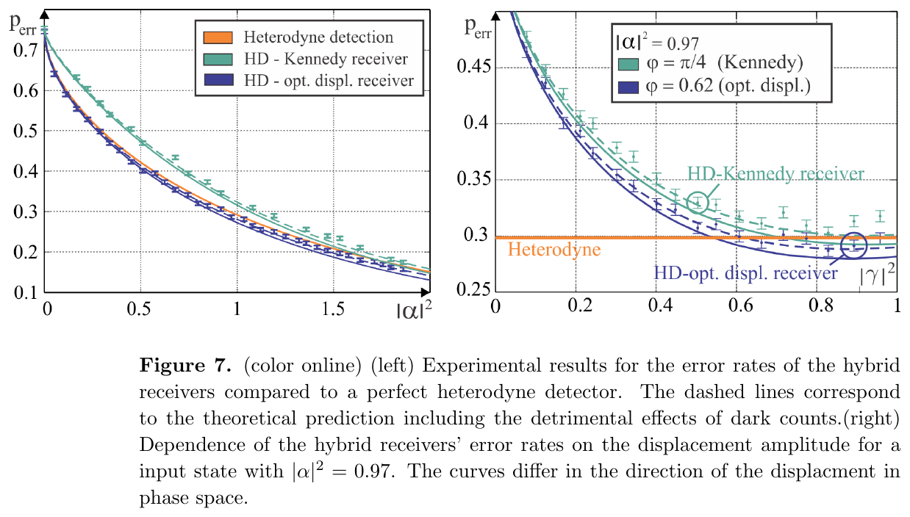
Nguồn: Müller et al., New J. Phys. 14, 083009 (2012), Fig. 7 (p. 11)
| Máy thu | Pe | Tỉ số | t² |
|---|---|---|---|
| Heterodyne | 0,2983 | 1 | - |
| HD-K | 0,3158 | 1,058 | 0,595 |
| HD-OD | 0,2785 | 0,933 | 0,503 |
| Helstrom | 0,0988 | 0,331 | - |
Tại \(|\alpha|^2=0{,}97\) (điểm đo trong Fig. 7 phải): tối ưu số cho HD-OD thấp hơn heterodyne khoảng \(6,7\%\), còn HD-K cao hơn \(5,8\%\).
\(P_e^{\rm Het}=1-\Phi(|\alpha|)^2\) với \(\Phi\) phân phối chuẩn.
Đại lượng vẽ là \(\tilde p_{\rm err}=P_e/P_e^{\rm Het}\). Đường lý thuyết lý tưởng: HD-OD luôn dưới 1, HD-K lên đến khoảng 1,1 ở tín hiệu yếu rồi cắt 1 tại \(|\alpha|^2\approx1{,}44\) (tối ưu t²).
Tỉ lệ lỗi tương đối so với heterodyne
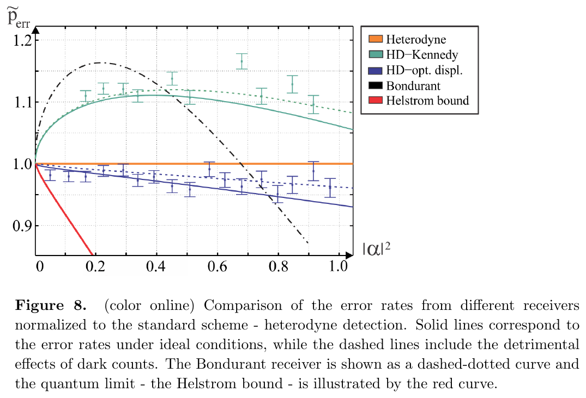
Nguồn: Müller et al., New J. Phys. 14, 083009 (2012), Fig. 8 (p. 12)
| \(|\alpha|^2\) | HD-K | HD-OD | Helstrom |
|---|---|---|---|
| 0,25 | 1,105 | 0,981 | 0,802 |
| 0,50 | 1,103 | 0,965 | 0,620 |
| 0,75 | 1,083 | 0,949 | 0,454 |
| 1,00 | 1,055 | 0,931 | 0,316 |
| 1,50 | 0,992 | 0,893 | 0,141 |
| 2,00 | 0,927 | 0,851 | 0,063 |
| 3,00 | 0,803 | 0,762 | 0,015 |
Máy thu loại trừ: số tính từ tham số thực nghiệm
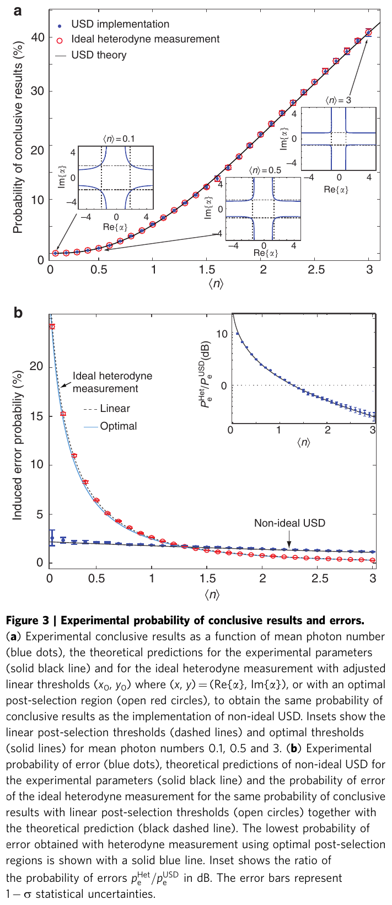
Nguồn: Becerra, Fan, Migdall, Nat. Commun. 4, 2028 (2013), Fig. 3 (p. 5)
- \(F_k=e^{-\eta|\alpha_k-\beta_k|^2/4}\)mức khớp mode
- \(G_k=1-F_k\)phần lệch mode
| \(\bar n\) | pC | pe USD | pe Het | Tỉ số |
|---|---|---|---|---|
| 1,0 | 0,0523 | 0,0176 | 0,0257 | 1,46 |
| 3,0 | 0,4083 | 0,0109 | 0,0029 | 0,27 |
(\(\eta=0{,}75,\ \mathcal V=0{,}991\); công thức Eq. (2), (3), (5) Becerra 2013.)
SWN trên QPSK: cận và xác suất chính xác
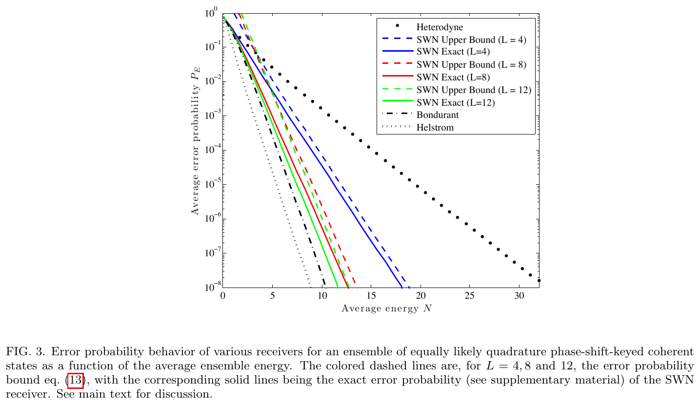
Nguồn: Nair, Guha, Tan, arXiv:1212.2048 (2013), Fig. 3 (p. 6)
| \(L\) | Cận (13) | Chính xác | \(\xi\ge\) |
|---|---|---|---|
| 4 | 6,87×10−5 | 3,41×10−5 | 1,00 |
| 8 | 2,24×10−6 | 5,39×10−7 | 1,50 |
| 12 | 1,02×10−6 | 1,57×10−7 | 1,67 |
Tại \(N=10\): Helstrom 1,03×10−9, heterodyne 1,56×10−3. Cận (13) và xác suất chính xác tính lại bằng quy hoạch động.
PPM sáu xung: bộ ba máy thu so với Helstrom
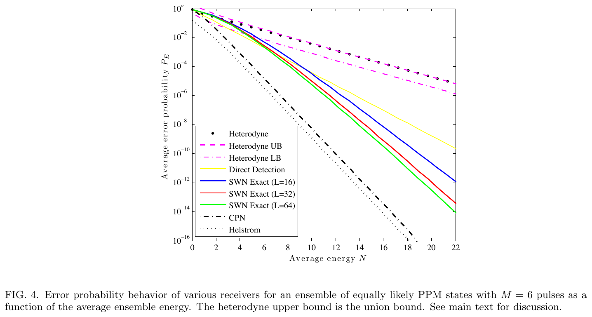
Nguồn: Nair, Guha, Tan, arXiv:1212.2048 (2013), Fig. 4 (p. 6)
Với PPM, các trạng thái trực giao đôi một nên \(\xi^{\rm Hel}=\kappa\) vẫn là mốc, và heterodyne chậm hơn bốn lần theo Eq. (15). Điều kiện cho SWN: \(L\ge M-2=4\).
\(P_E^{\rm SWN}[E|m]=\Pr[\text{fewer than }m-1\text{ clicks}\mid m]\) (phụ lục A.20).
Thí nghiệm lai: thông số phần cứng
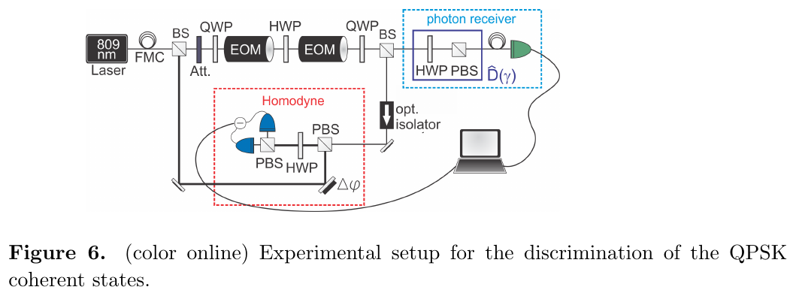
Nguồn: Müller et al., New J. Phys. 14, 083009 (2012), Fig. 6 (p. 9)
| Đại lượng | Giá trị |
|---|---|
| Bước sóng, xung, tốc độ | 809 nm, 800 ns, 100 kHz |
| V, ηdiodes, ηHD | 95%, 92±3%, 83±3% |
| ηAPD, T/R | 63±3%, 53/47 |
| Photon trong dao động phụ | ≈ 20 |
| Xác suất đếm tối | 2,72% |
\(\eta_{HD}=\mathcal V^2\eta_{\rm diodes}=0{,}95^2\times0{,}92=0{,}830\) (kiểm: khớp 83%).
Bẫy dấu trong công thức sai số của OD
Bản văn bản trích từ PDF in \(\exp(-t^2|\alpha|^2/2+|\beta|^2)\). Kiểm bằng không gian Fock với \(a=0{,}8\): \(P_e=\tfrac12(1-|\langle\beta|a\rangle|^2)+\tfrac12|\langle\beta|{-}a\rangle|^2=0{,}032755\).
- \(-a^2-\beta^2\)cho 0,032755, khớp Fock
- \(-a^2+\beta^2\)cho giá trị âm, vô lý
Khi cài đặt công thức, luôn đối chiếu với mô phỏng trực tiếp.
Độ tương phản quyết định lỗi của máy thu loại trừ
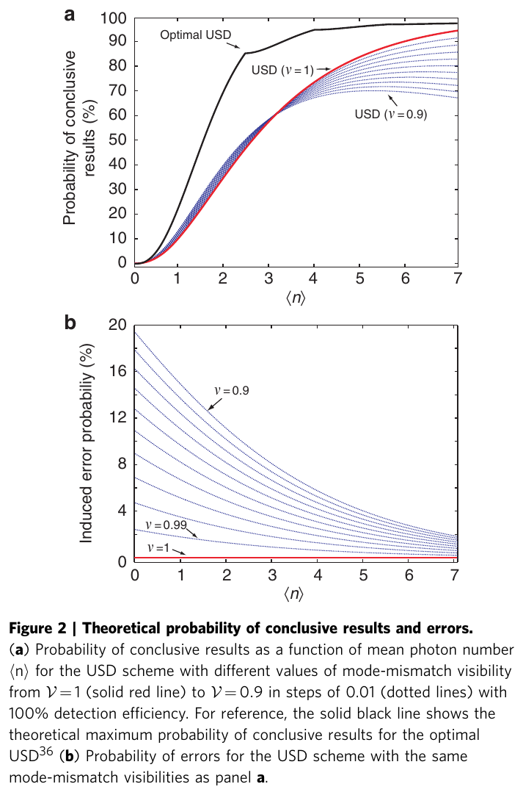
Nguồn: Becerra, Fan, Migdall, Nat. Commun. 4, 2028 (2013), Fig. 2 (p. 4)
\(F_k=e^{-\eta|\alpha_k-\beta_k|^2/4}\), \(|\alpha_j-\beta_k|^2=2|\alpha|^2\{1-\mathcal V\cos[\arg\alpha_j-\arg\beta_k]\}\).
| \(\bar n\) | \(\mathcal V\) | pC | pe |
|---|---|---|---|
| 1,0 | 1,00 | 0,0979 | 0,0000 |
| 1,0 | 0,99 | 0,0992 | 0,0180 |
| 1,0 | 0,90 | 0,1106 | 0,1582 |
| 3,0 | 0,90 | 0,5437 | 0,0921 |
So sánh cùng xác suất kết luận
USD có kết quả "chưa kết luận" nên không thể so \(p_e\) thô với heterodyne. Becerra chỉnh ngưỡng \(x_0\) của heterodyne (Eq. (4)) để có cùng \(p_C\), rồi so \(p_e\) (Eq. (5)). Bài báo kết luận lỗi thấp hơn đến chín lần với \(\bar n\le1\) mà không hiệu chỉnh hiệu suất.
| \(\bar n\) | pC | pe USD | pe Het | Tỉ số (dB) |
|---|---|---|---|---|
| 0,1 | 0,0001 | 0,0215 | 0,2436 | 10,5 |
| 0,5 | 0,0093 | 0,0197 | 0,0637 | 5,1 |
| 1,0 | 0,0523 | 0,0176 | 0,0257 | 1,6 |
| 2,0 | 0,2178 | 0,0139 | 0,0076 | -2,6 |
| 3,0 | 0,4083 | 0,0109 | 0,0029 | -5,7 |
Giới hạn của thí nghiệm lai
Müller và cộng sự nói rõ: hồi tiếp được mô phỏng khi xử lý sau (chỉ giữ dữ liệu mà displacement khớp kết quả homodyne), phân tích giả sử hiệu suất đơn vị, và hao hụt được quy về bộ chia chùm hiệu dụng. Vì vậy số liệu cho thấy ý tưởng, chưa phải máy thu thời gian thực.
- \(\eta_{\rm APD}=0{,}63\)hiệu suất APD
- \(\eta_{HD}=0{,}83\)hiệu suất homodyne
Kiểm: \(T=0{,}53\Rightarrow T^{\prime}=0{,}461\).
Ngưỡng cắt phụ thuộc giả định chia chùm
Bài báo ghi HD-K thắng heterodyne khi \(|\alpha|^2\gtrsim1{,}6\). Tối ưu số \(t^2\) cho điểm cắt 1,44. Chênh lệch có thể do bài báo dùng tỉ lệ chia cố định 53/47, nên cần nêu rõ giả định khi trích số.
| \(|\alpha|^2\) | HD-K, \(t^2=0{,}47\) | HD-K tối ưu | Het |
|---|---|---|---|
| 1,00 | 0,3173 | 0,3082 | 0,2921 |
| 1,50 | 0,2131 | 0,2068 | 0,2085 |
| 1,60 | 0,1968 | 0,1912 | 0,1953 |
| 2,00 | 0,1434 | 0,1401 | 0,1511 |
\(P_{\rm err}^{\rm HD\text{-}K}(t^2)\) phụ thuộc mạnh vào \(t^2\).
Mở rộng: kiểm thử tuần tự đạt mũ Chernoff
- \(\Pi_m=|\psi_m\rangle\langle\psi_m|\)phép chiếu nhị phân trên từng bản sao
- \(\xi_{\rm QC}=\min_{m\neq m^{\prime}}-\ln|\langle\psi_m|\psi_{m^{\prime}}\rangle|^2\)mũ Chernoff lượng tử cho trạng thái thuần
Với hai trạng thái \(|\pm\alpha\rangle\): \(F_{\max}=e^{-4|\alpha|^2}\), \(\xi_{\rm QC}=4|\alpha|^2\). Với \(n\) bản sao: \(P_E\lesssim e^{-4n|\alpha|^2}\) theo thang mũ (Nair 2013, Eq. (7), (17)-(19), tr. 3 và 7).
Dòng thời gian của các máy thu thực dụng
Năm lấy từ danh mục tham khảo của ba bài đã đọc. Nét đứt: ảnh hưởng ý tưởng; nét liền: dựng trực tiếp trên kết quả trước.
Máy thu thực dụng trên kênh FSO nhiễu loạn
- \(I\)cường độ chuẩn hoá, \(E[I]=1\)
- \(\alpha,\beta\)tham số Gamma-Gamma
| \(\bar n\) | Homodyne | Kennedy | Helstrom | Helstrom không nhiễu loạn |
|---|---|---|---|---|
| 0,5 | 0,1309 | 0,1476 | 0,0893 | 3,51×10−2 |
| 1,0 | 0,0732 | 0,0755 | 0,0440 | 4,60×10−3 |
| 2,0 | 0,0345 | 0,0321 | 0,0182 | 8,39×10−5 |
| 4,0 | 0,0137 | 0,0116 | 0,0065 | 2,81×10−8 |
(Minh hoạ, giả định \(\alpha=4,\ \beta=2\), bỏ qua nhiễu nền.) Nhiễu loạn làm mọi đường phẳng đi; thứ tự Kennedy và homodyne vẫn đổi ở \(\bar n\) gần 1,5.
Liên hệ với surrogate Helstrom của dự án
| \(\bar n\) | Homodyne | Kennedy | OD |
|---|---|---|---|
| 0,10 | 1,24 | 1,57 | 1,16 |
| 0,50 | 2,24 | 1,93 | 1,55 |
| 1,00 | 4,95 | 1,99 | 1,86 |
| 2,00 | 27,89 | 2,00 | 1,99 |
| 3,00 | 173,17 | 2,00 | 2,00 |
Bảng cho thấy máy thu thực dụng còn cách Helstrom từ \(1{,}4\) đến \(\gg2\) lần ở \(\bar n\) nhỏ. Mạng thay thế dự đoán chính \(P_e^{\rm Hel}\), nên cho biết cận dưới mà phần cứng chưa đạt.
Danh mục thông số khi thiết kế thí nghiệm
| Thông số | Ảnh hưởng | Giá trị trong bài |
|---|---|---|
| \(\eta\) | Giảm p_C, tăng cơ hội lọt photon, ảnh hưởng đến cả hai máy thu | 75(1)% (Becerra) |
| \(\mathcal V\) | Rò photon sinh lỗi USD | 99,1(1)% (Becerra) |
| \(L\) | Số lát SWN, error exponent tới \((1-\frac{M-2}L)\kappa\) | 4, 8, 12 (Nair) |
| \(t^2\) | Chia chùm giữa homodyne và photon counting | 53/47 (Müller) |
| Đếm tối | Làm tăng lỗi ở tín hiệu mạnh | 15 s−1 (Becerra); 2,72% (Müller) |
Hao hụt tuyến tính chỉ co biên độ \(\alpha\to\sqrt\eta\,\alpha\), nên \(\bar n\) hiệu dụng là \(\eta\bar n\). Với \(\eta=0{,}75\), \(\bar n=1\) cho \(\bar n_{\rm eff}=0{,}75\).
So sánh bốn máy thu thực dụng
| Máy thu | Trạng thái | Cơ chế | Kết quả chính | Nguồn |
|---|---|---|---|---|
| HD-K/HD-OD | QPSK | Homodyne + displacement + xung | HD-OD dưới heterodyne mọi |α|² | Müller 2012 |
| USD | 4 PSK | Loại trừ bốn cổng | Lỗi thấp hơn tới 9 lần ở n̄ ≤ 1 | Becerra 2013 |
| SWN | M-ary | Triệt tiêu tuần tự | Error exponent tới \(\kappa\) khi \(L\to\infty\) | Nair 2013 |
| ST | M trạng thái thuần | LOCC | \(\xi^{\rm ST}=\xi_{\rm QC}\) | Nair 2013 |
Tổng kết và phần chưa đóng
Điều rút ra
- Kennedy vượt homodyne khi \(\bar n>0{,}38\)
- Optimised displacement cải thiện mọi \(\bar n\), \(|\gamma|^2\ge0{,}5\)
- Heterodyne chậm hơn Helstrom bốn lần: \(\xi^{\rm Het}=\kappa/4\)
- USD thắng ở n̄ nhỏ khi so cùng p_C
Phần chưa đóng
- Máy thu thời gian thực cho QPSK chưa được nêu trong ba bài đã đọc
- Chưa có phân tích trên kênh nhiễu loạn trong các bài này
- Số liệu ở slide Phần 3 là tính lại, không phải số đo
Nội dung chi tiết
- Homodyne 0,0786
- Kennedy 0,0677
- Helstrom 0,0351
- Tỉ số Kennedy/Helstrom 1,93
- Kết luận: Kennedy thắng homodyne nhưng còn gấp ~1,9 lần Helstrom.
- Heterodyne 0,2983
- HD-K 0,3158
- HD-OD 0,2785
- Helstrom 0,0988
- Chỉ HD-OD thắng heterodyne; vẫn còn xa Helstrom.
- p_C=0,0523
- p_e USD=0,0176
- x₀ để p_C bằng nhau: 1,239
- p_e Het=0,0257
- Tỉ số 1,46
- κ=2
- Cận mũ (1−2/8)κ=1.5
- Cận (13) 2,24×10−6
- Chính xác 5,39×10−7
- Helstrom 1,03×10−9
- n̄=2, Kennedy 0,0321
- Homodyne 0,0345
- Helstrom 0,0182
- Không nhiễu loạn Helstrom 8,39×10−5
- Nhiễu loạn quyết định lỗi, không phải loại máy thu.
- Nhầm |α| với |α|²: n̄=|α|².
- Quên hệ số ½ trước erfc hoặc exp.
- So p_e thô của USD với heterodyne.
- Dùng Eq. (14) với dấu +β².
Bối cảnh: Kennedy và Dolinar (1973) đặt nền, Helstrom (1976) cho cận. Thí nghiệm Cook 2007 và Wittmann 2008 hiện thực hoá nhị phân; Becerra, Müller và Nair mở rộng sang M trạng thái.
Thực hành tương tác
Tự kiểm tra nhanh
Luyện tập sâu
Mở ngân hàng 46 câu trắc nghiệm và 5 bài viết code →
Tài liệu tham khảo
- F. E. Becerra, J. Fan, A. Migdall, Implementation of generalized quantum measurements for unambiguous discrimination of multiple non-orthogonal coherent states, Nat. Commun. 4, 2028, 2013.
- C. R. Müller et al., QPSK coherent state discrimination via a hybrid receiver, New J. Phys. 14, 083009, 2012 (arXiv:1204.0888).
- R. Nair, S. Guha, S.-H. Tan, Realizable receivers for discriminating arbitrary coherent-state waveforms and multi-copy quantum states near the quantum limit, arXiv:1212.2048, 2013.